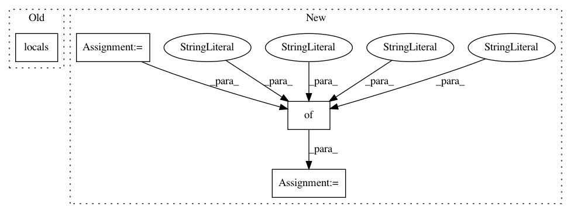

2d57cf126eb6a52f57d482238aacc22c71e587e7,tags/views.py,,tags,#Any#Any#,35
Before Change
if request.user.is_authenticated:
show_unfollow_button = follow_utils.is_user_following_tag(request.user, slash_tag)
return render(request, "sounds/tags.html", locals())
def old_tag_link_redirect(request):
After Change
group_cache_percent=0,
group_truncate=True) // Sets how many results from the same group are taken into account for computing the facets
page = None
num_results = 0
tags = []
error = False
docs = {}
non_grouped_number_of_results = 0
paginator = None
try:
results = SolrResponseInterpreter(solr.select(unicode(query)))
paginator = SolrResponseInterpreterPaginator(results, settings.SOUNDS_PER_PAGE)
num_results = paginator.count
non_grouped_number_of_results = results.non_grouped_number_of_matches
page = paginator.page(current_page)
tags = [dict(name=f[0], count=f[1]) for f in results.facets["tag"]]
docs = results.docs
resultids = [d.get("id") for d in docs]
resultsounds = sounds.models.Sound.objects.bulk_query_id(resultids)
allsounds = {}
for s in resultsounds:
allsounds[s.id] = s
for d in docs:
d["sound"] = allsounds[d["id"]]
except SolrException as e:
error = True
search_logger.error("SOLR ERROR - %s" % e)
except:
error = True
slash_tag = "/".join(multiple_tags)
follow_tags_url = ""
unfollow_tags_url = ""
show_unfollow_button = False
if slash_tag:
follow_tags_url = reverse("follow-tags", args=[slash_tag])
unfollow_tags_url = reverse("unfollow-tags", args=[slash_tag])
show_unfollow_button = False
if request.user.is_authenticated:
show_unfollow_button = follow_utils.is_user_following_tag(request.user, slash_tag)
tvars = {"show_unfollow_button": show_unfollow_button,
"multiple_tags": multiple_tags,
"follow_tags_url": follow_tags_url,
"unfollow_tags_url": unfollow_tags_url,
"error": error,
"tags": tags,
"slash_tag": slash_tag,
"num_results": num_results,
"non_grouped_number_of_results": non_grouped_number_of_results,
"docs": docs,
"paginator": paginator,
"page": page,
"current_page": current_page
}
return render(request, "sounds/tags.html", tvars)
def old_tag_link_redirect(request):
In pattern: SUPERPATTERN
Frequency: 3
Non-data size: 4
Instances
Project Name: MTG/freesound
Commit Name: 2d57cf126eb6a52f57d482238aacc22c71e587e7
Time: 2018-06-19
Author: alastair.porter@upf.edu
File Name: tags/views.py
Class Name:
Method Name: tags
Project Name: RaRe-Technologies/gensim
Commit Name: 6a289fefd72f038c8cc14826f63624950f5de1f8
Time: 2016-07-13
Author: menshikh.iv@gmail.com
File Name: gensim/models/lda_worker.py
Class Name:
Method Name: main
Project Name: RaRe-Technologies/gensim
Commit Name: 6a289fefd72f038c8cc14826f63624950f5de1f8
Time: 2016-07-13
Author: menshikh.iv@gmail.com
File Name: gensim/models/lda_dispatcher.py
Class Name:
Method Name: main